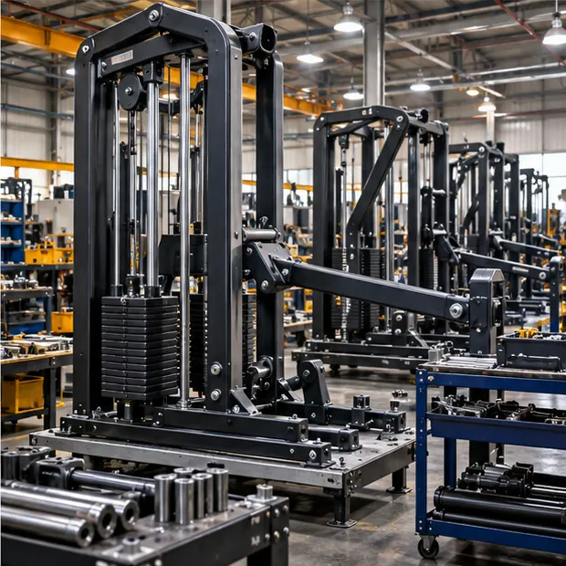

PMTN RANGE
Shafts · 6–80 mm
German TechnologyTell us the diameter, length and quantity.
and much moreEnquire now ↗INDUSTRY APPLICATION
Gym equipment combines guided movement, rotating joints and repeated load cycles. Treadmills, strength machines and adjustable frames use components that must match the assembly dimensions and movement path. Shafts and linear bearings can be relevant to guided mechanisms, but the correct choice depends on the machine design, load, stroke, speed and environment. Share a drawing, existing part number or clear measurements with the enquiry. We can help identify a product category and confirm the exact specification before an order is placed.
Ask about your application ↗
PRODUCT RANGE
Product associations below are commonly used in these applications; they are not machine-specific recommendations. Confirm the exact specification with our team.
PMTN RANGE
Tell us the diameter, length and quantity.
and much moreEnquire now ↗
A SIMPLE PROCESS
Share the bearing number, size or application.
We check the exact specification with you.
We confirm the next steps for your requirement.
COMMON QUESTIONS
The page lists product families commonly considered for Gym Equipment Manufacturing. The required design depends on the equipment position and operating conditions.
Send the complete bearing number or dimensions, the machine application, required quantity and destination country.
Share a drawing or existing part reference so the specification can be checked. Final fit must be confirmed for the specific equipment.
Send us the machine and bearing details.
Continue on WhatsApp ↗